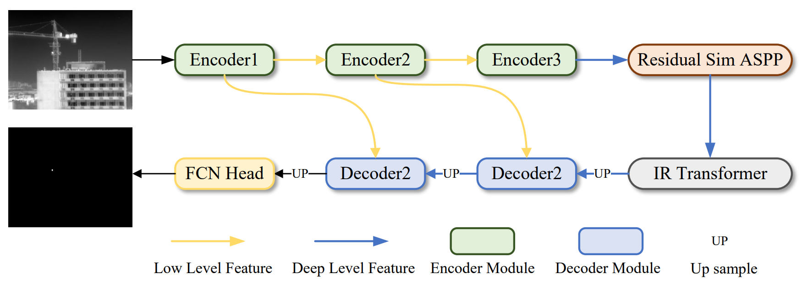
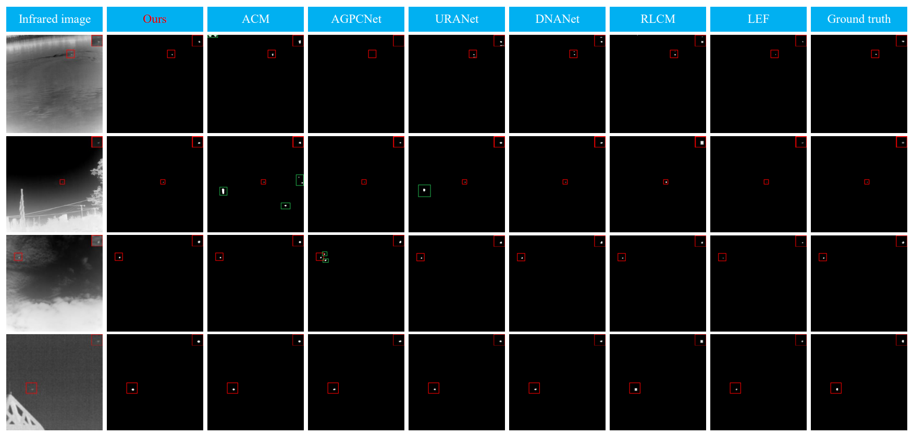
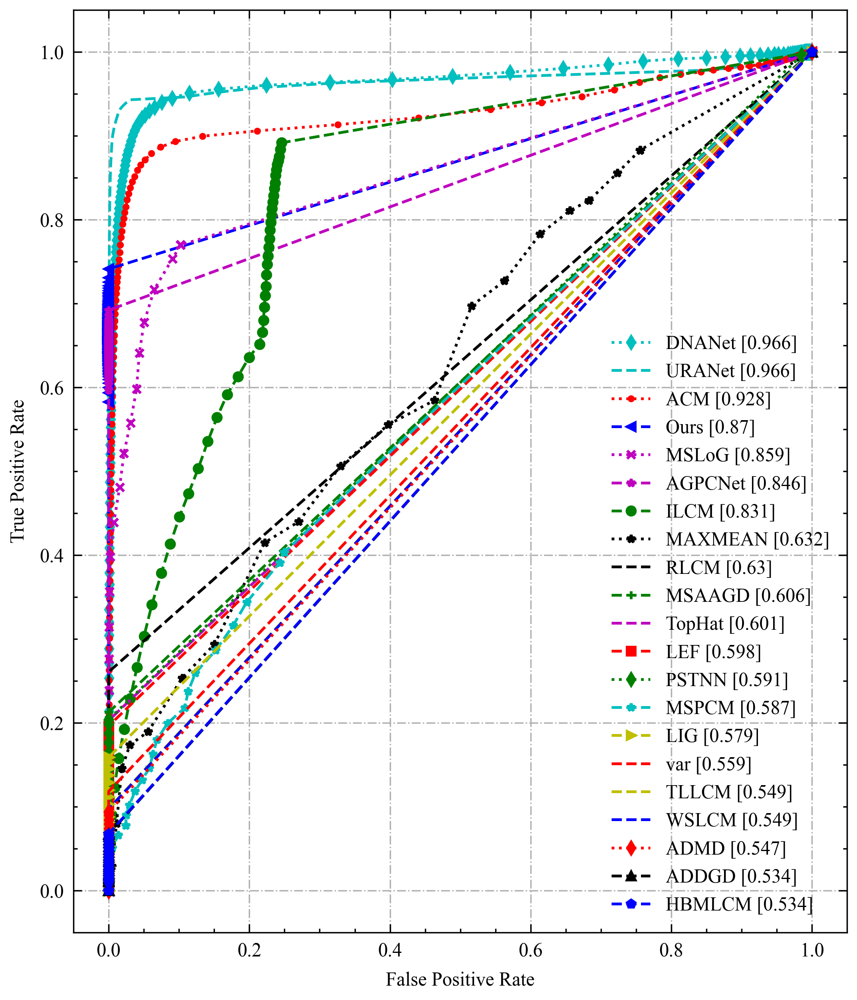
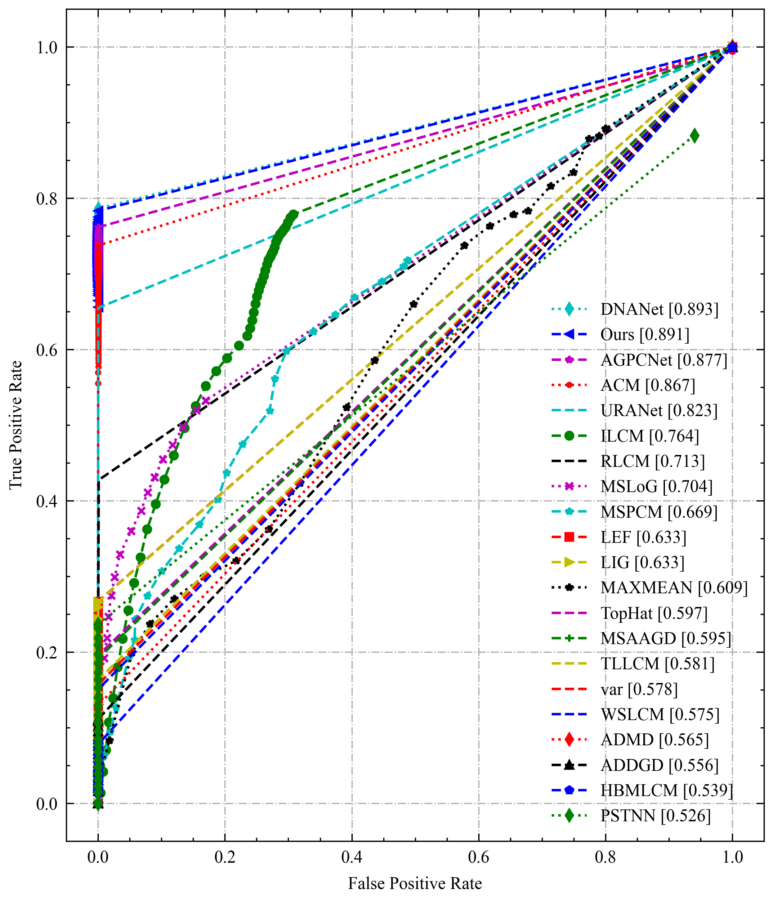
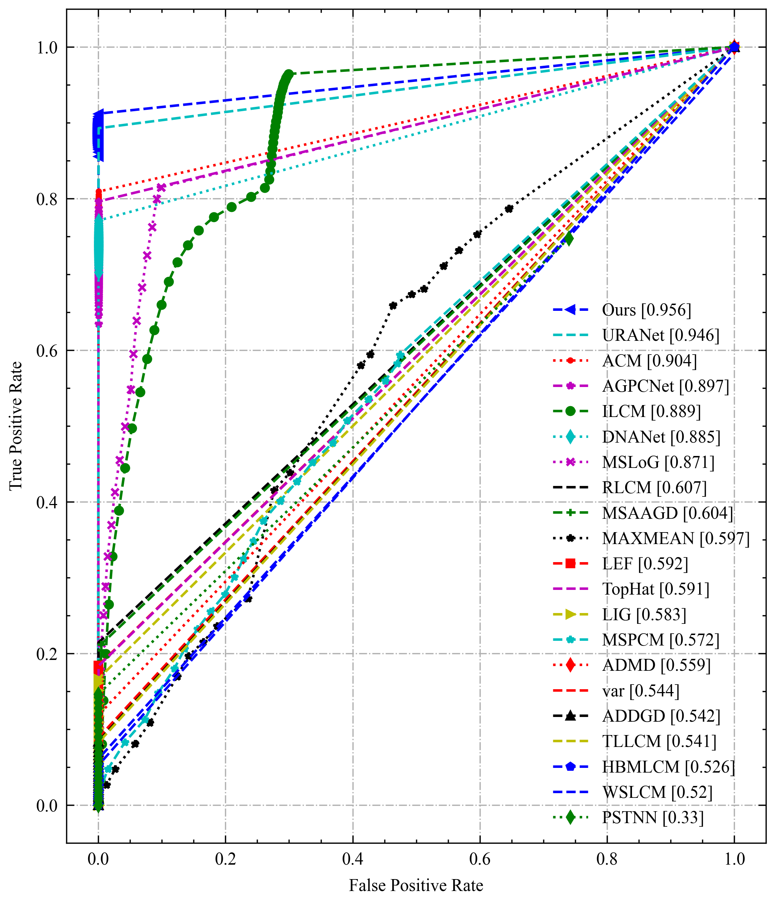
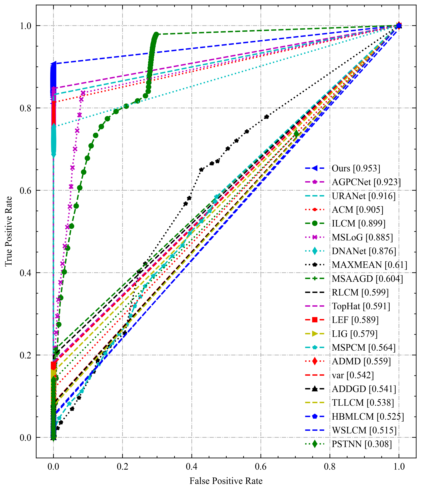

IR-TransDet: Infrared Dim and Small Target Detection With IR-Transformer
|  |
|---|
Abstract
The infrared small and dim target detection method is a core technology in military equipment such as search and tracking and space-based early warning. Compared to general target detection techniques, infrared targets are characterized by their small size and dim features, making them more challenging. We propose a novel infrared small and dim target detection approach called IR-TransDet. This approach combines the advantages of convolutional neural networks and Transformers, enabling effective extraction of target features and global semantic information. Firstly, we introduce EFEM, a module that uses group convolution and pointwise convolution to effectively localize target features. Based on the image characteristics of small and dim targets, we propose an improved Residual Sim ASPP. By incorporating self-attention mechanism, we explore the correlation between targets and neighboring pixels as well as global images, and design the IR-Transformer module. Finally, we release the ISTD-Benchmark as an open-source benchmark for comparative evaluation of infrared small and dim target detection methods. We conducted experiments on four open-source datasets, and the results demonstrate that IR-TransDet achieves state-of-the-art performance in infrared small and dim target detection. Furthermore, with its lightweight design, the average inference time of IR-TransDet on the 3090 is 2.4066 milliseconds, resulting in a frame rate of 776.9 FPS.
Results
|  |
|---|
ROC Results
|  |  |
|  |  |
Deploy Model With TensorRT
| Device | FPS |
|---|---|
| RTX 3060 | 415.5 [fp16] |
| RTX 3090 | 776.9 [fp16] |
TensorRT Version 8.5.3.1